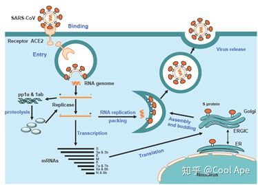

首先我们要了解什么是冠状病毒。冠状病毒在系统分类上属冠状病毒科，它是具外套膜的正链单股RNA病毒，直径约80~120nm，其遗传物质是所有RNA病毒中最大的，只感染人、鼠、猪、猫、犬、禽类脊椎动物。
冠状病毒最先是1937年从鸡身上分离出来，病毒颗粒的直径60~200nm，平均直径为100nm，呈球形或椭圆形，具有多形性。
（1）α属的229E、NL63；
（2）β属的OC43、HKU1；
（3）MERSr-CoV、SARSr-CoV；
（4）HKU1、SARS-CoV；
（5）MERS-CoV：可引起肺炎；
（6）此次从武汉市不明原因肺炎患者下呼吸道分离出的冠状病毒为一种新型冠状病毒（β属），命名为2019-nCoV。
冠状病毒入侵宿主细胞的受体蛋白都不太一样。SARS-nCoV和2019-nCoV入侵宿主细胞并复制的过程大致为：病毒S蛋白与人细胞的ACE2结合，通过内吞作用（endocytosis）进入人体细胞，释放出病毒mRNA，在人体细胞内翻译、包装并且释放（J Thorac Dis 2013;5(S2):S142-S148）
参考资料：
1.百度百科
2.知乎@cool Ape